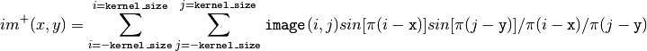

openpiv.lib.sincinterp¶
- openpiv.lib.sincinterp()¶
Re-sample an image at intermediate positions between pixels.
This function uses a cardinal interpolation formula which limits the loss of information in the resampling process. It uses a limited number of neighbouring pixels.
The new image at fractional locations
 and
and  is computed as:
is computed as:
Parameters : image : np.ndarray, dtype np.int32
the image array.
x : two dimensions np.ndarray of floats
an array containing fractional pixel row positions at which to interpolate the image
y : two dimensions np.ndarray of floats
an array containing fractional pixel column positions at which to interpolate the image
kernel_size : int
interpolation is performed over a (2*kernel_size+1)*(2*kernel_size+1) submatrix in the neighbourhood of each interpolation point.
Returns : im : np.ndarray, dtype np.float64
the interpolated value of image at the points specified by x and y